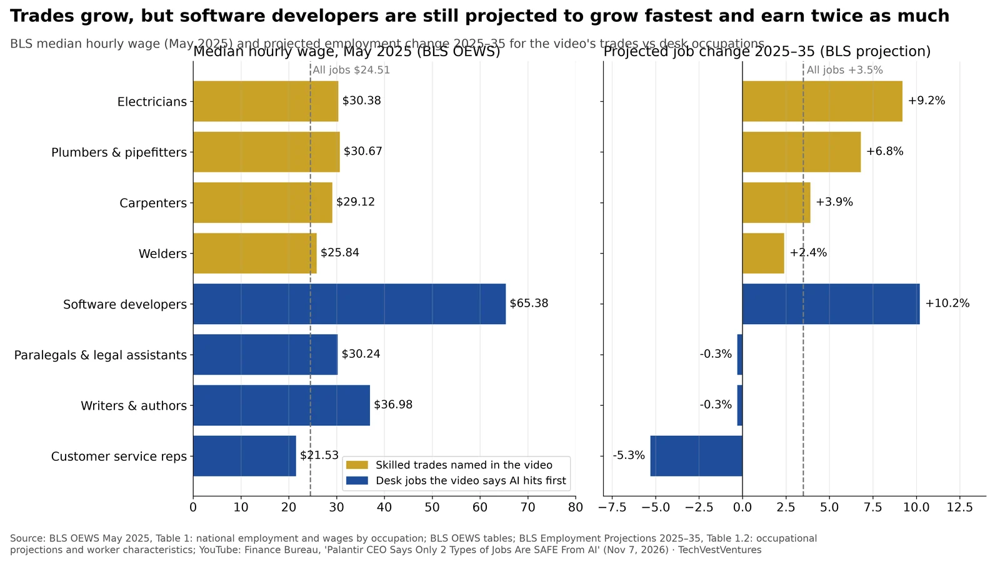
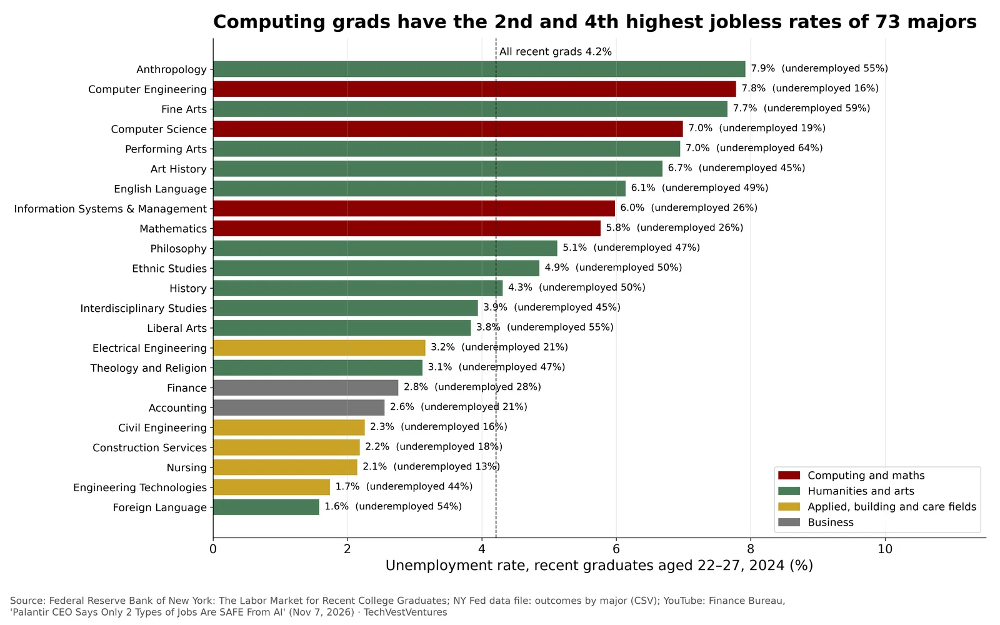
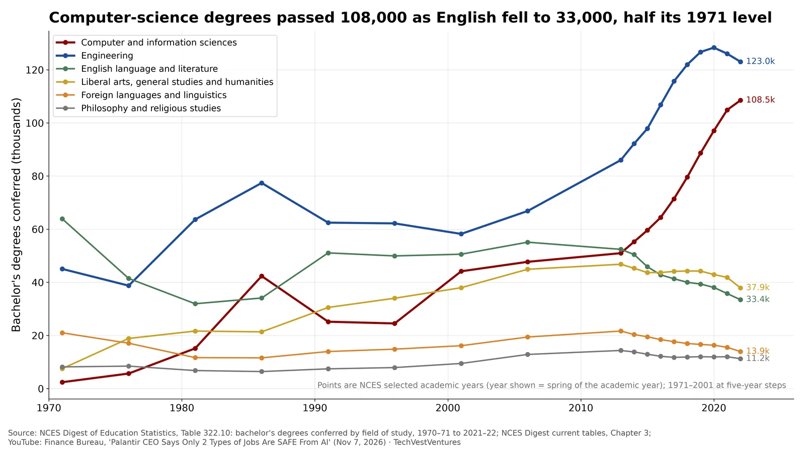
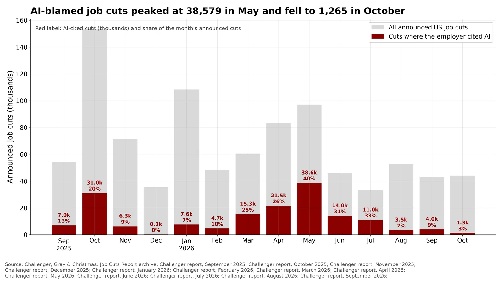
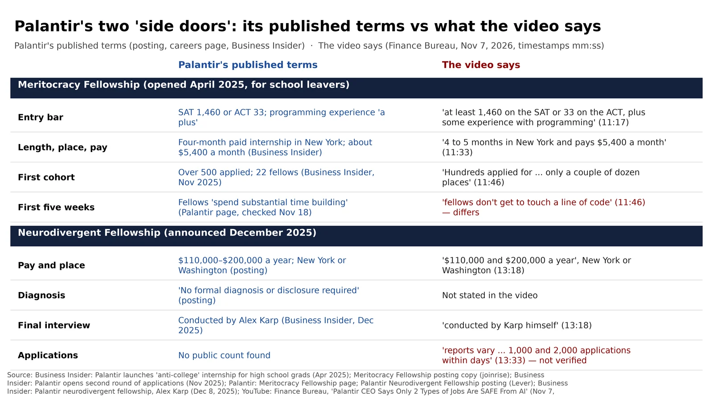
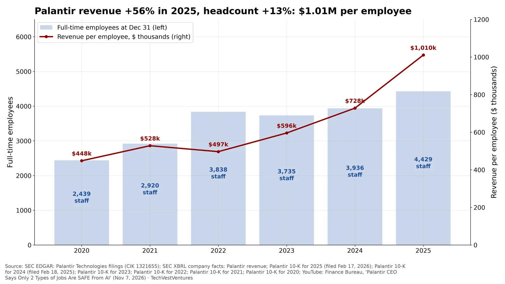

Karp Claims

The video's claim: skilled trades are safe from AI, while AI takes the bottom rungs of coding, legal and writing work. What BLS data show: electricians (projected +9.2% to 2035), plumbers (+6.8%), carpenters (+3.9%) and welders (+2.4%) are all projected to grow, and most beat the +3.5% all-jobs average. Among the desk jobs, customer service representatives are projected to shrink 5.3% and paralegals and writers to stay flat (-0.3% each). But the projection does not support 'coding is finished': software developers are projected to grow +10.2%, faster than any trade shown, at a median $65.38 an hour against $30.38 for electricians. Projections are BLS projections, not TVV forecasts, and a growing occupation is not the same as one that is 'safe from AI'.
- Median hourly wage, May 2025: Electricians $30.38; Plumbers & pipefitters $30.67; Carpenters $29.12; Welders $25.84; Software developers $65.38; Paralegals & legal assistants $30.24; Writers & authors $36.98; Customer service reps $21.53; all occupations $24.51.
- Projected employment 2025 to 2035 (thousands): Electricians 821.0 to 896.9; Plumbers & pipefitters 510.6 to 545.2; Carpenters 889.7 to 924.7; Welders 437.7 to 448.1; Software developers 1,717.8 to 1,892.6; Paralegals & legal assistants 404.9 to 403.8; Writers & authors 140.3 to 139.9; Customer service reps 2,666.0 to 2,524.1.
- Average annual openings 2025–35 (thousands, mostly replacing workers who leave): electricians 72.7, plumbers 42.0, carpenters 62.8, welders 40.3; customer service reps 289.5, software developers 95.3.
- Entry route: BLS lists apprenticeship as the typical training for electricians, plumbers and carpenters, and a bachelor's degree for software developers and writers.
- Doubt: the BLS projections were finalised before AI's effects could be measured, and BLS adjusts only some occupations for AI. They are a baseline, not a test of the video's claim.
Note: Data dates: OEWS reference period May 2025; projections 2025–35 (BLS Employment Projections, 2026 release). Read Nov 22, 2026.
Sources: BLS OEWS May 2025, Table 1: national employment and wages by occupation BLS OEWS tables BLS Employment Projections 2025–35, Table 1.2: occupational projections and worker characteristics YouTube: Finance Bureau, 'Palantir CEO Says Only 2 Types of Jobs Are SAFE From AI' (Nov 7, 2026)

The video's claim: AI is taking the junior coding work first, and generalist humanities degrees will be hard to sell. The New York Fed's 2024 figures for recent graduates (aged 22–27) partly fit: computer engineering (7.8%) and computer science (7.0%) rank 2 and 4 of 73 majors for unemployment, well above the 4.2% average. But computing graduates who do find work are rarely underemployed (19% for computer science vs 39% overall) and start on $87,000. Humanities results are mixed, not uniformly bad: anthropology, fine arts and art history are near the top, while history, foreign languages and theology sit below average unemployment but with underemployment near 50%. These are 2024 data, the latest the New York Fed has published by major, and they cannot say whether AI caused any of it.
- Highest unemployment, recent grads 2024: Anthropology 7.9%; Computer Engineering 7.8%; Fine Arts 7.7%; Computer Science 7.0%; Performing Arts 7.0%; Architecture 6.8%.
- Lowest: Foreign Language 1.6%; Agriculture 1.4%; Elementary Education 1.2%; Miscellaneous Education 1.1%; Special Education 0.7%. Construction services: 2.2%, underemployed 18%.
- Underemployment means working in a job that does not usually need a degree. It is low for computing (16% computer engineering) and high for many humanities majors (English 49%, liberal arts 55%, performing arts 64%).
- Latest headline: the New York Fed's Nov 2, 2026 update (2026:Q3) puts the recent-graduate unemployment rate at 5.2%, its lowest in more than a year, with underemployment up to 42.5%. The by-major table is updated each February.
- Doubt: majors with small samples (anthropology, art history) move a lot year to year; the ranking is a snapshot of 2024, before most AI-attributed layoffs counted by Challenger in 2026.
Note: Data date: 2024 American Community Survey via IPUMS, published by the New York Fed Feb 4, 2026; headline series release Nov 2, 2026. Read Nov 22, 2026.
Sources: Federal Reserve Bank of New York: The Labor Market for Recent College Graduates NY Fed data file: outcomes by major (CSV) YouTube: Finance Bureau, 'Palantir CEO Says Only 2 Types of Jobs Are SAFE From AI' (Nov 7, 2026)

The video's claim: elite generalist humanities degrees will be hard to sell without a specific skill alongside them. This chart shows only what students chose, not what AI will do. NCES Digest Table 322.10: US bachelor's degrees in computer and information sciences rose from 51.0k in 2012–13 to 108.5k in 2021–22, and engineering to 123.0k. Over the same decade English fell from 52.4k to 33.4k, and English, philosophy and religion, foreign languages and general liberal arts together fell from 135.2k to 96.5k. Students had already shifted toward computing before ChatGPT. The irony for the video's argument: the field students crowded into is the one with the highest graduate jobless rates in chart J2. The latest NCES table ends in 2021–22, so the post-ChatGPT years are not yet in it.
- 2021–22 totals: all fields 2,015,035; computer and information sciences 108,503 (5.4% of all); engineering 123,017; English 33,429; philosophy and religious studies 11,230; foreign languages 13,912; liberal arts and general studies 37,887.
- 1970–71: English 63,914, computer sciences 2,388. Computer sciences had an earlier peak of 47,702 in 2005–06 (shown) after the dot-com era; history is reported only inside 'social sciences and history', so it is left out.
- Visual and performing arts held up: 97,799 in 2012–13, 90,241 in 2021–22.
- Doubt: degree counts reflect choices made years earlier; they say nothing direct about which degrees AI will devalue.
Note: Data date: NCES Table 322.10, prepared September 2023 (2021–22 provisional). It is the current Digest table for this series as of Nov 22, 2026.
Sources: NCES Digest of Education Statistics, Table 322.10: bachelor's degrees conferred by field of study, 1970–71 to 2021–22 NCES Digest current tables, Chapter 3 YouTube: Finance Bureau, 'Palantir CEO Says Only 2 Types of Jobs Are SAFE From AI' (Nov 7, 2026)

Employers' stated reasons, not proven causes. Challenger, Gray & Christmas counts announced US job cuts and the reason companies give. Cuts citing artificial intelligence rose from 7,624 in January 2026 to a peak of 38,579 in May (40% of that month's cuts), led all reasons from March to July, then fell for three months to 1,265 in October, the lowest of the year. Year to date AI has been cited for 121,401 cuts, about 20% of the 2026 total and more than double the 54,836 for all of 2025; Challenger says Market/Economic Conditions overtook AI as the leading 2026 reason in October. The video's 'bottom rungs first' story fits the spring surge; the autumn drop does not show an accelerating wave. Announcements are not completed layoffs, and many firms that use AI do not name it.
- Monthly AI-cited cuts as printed by Challenger: Sep 2025 7,000 of 54,064; Oct 2025 31,039 of 153,074; Nov 2025 6,280 of 71,321; Dec 2025 142 of 35,553; Jan 2026 7,624 of 108,435; Feb 2026 4,680 of 48,307; Mar 2026 15,341 of 60,620; Apr 2026 21,490 of 83,387; May 2026 38,579 of 97,006; Jun 2026 14,029 of 45,849; Jul 2026 10,970 of 33,429; Aug 2026 3,462 of 52,881; Sep 2026 3,961 of 43,281; Oct 2026 1,265 of 43,994.
- Before September 2025 Challenger printed only year-to-date AI totals: 75 through June 2025 and 10,375 through August 2025, against 20,219 more filed under 'technological update'.
- Since 2023, when Challenger began tracking AI as a reason, it has been cited in 193,226 cuts (October 2026 report).
- Andy Challenger (July 2026 report): 'while AI is shifting the labor market, it is not dismantling it'; hiring plans were up 25% on 2025 at that point.
Note: Data date: Challenger monthly reports published Oct 2, 2025 to Nov 5, 2026; read Nov 22, 2026. Shares are TVV's division of the two printed numbers.
Sources: Challenger, Gray & Christmas: Job Cuts Report archive Challenger report, September 2025 Challenger report, October 2025 Challenger report, November 2025 Challenger report, December 2025 Challenger report, January 2026 Challenger report, February 2026 Challenger report, March 2026 Challenger report, April 2026 Challenger report, May 2026 Challenger report, June 2026 Challenger report, July 2026 Challenger report, August 2026 Challenger report, September 2026 Challenger report, October 2026 YouTube: Finance Bureau, 'Palantir CEO Says Only 2 Types of Jobs Are SAFE From AI' (Nov 7, 2026)

Karp says the two groups with a future are people with vocational training and neurodivergent thinkers, and the video presents Palantir's two fellowships as the company acting on that view. Palantir's own postings and Business Insider's reporting confirm the entry bar, pay and place the video gives, with two differences: the posting calls programming experience 'a plus' rather than a requirement, and Palantir's page says fellows 'spend substantial time building' in the first five weeks, where the video says they 'don't get to touch a line of code'. The video's 1,000 to 2,000 Neurodivergent Fellowship applications could not be found in any public report. Two small programmes of about two dozen school leavers and an unstated number of fellows are a signal of Palantir's hiring philosophy, not evidence about the job market as a whole.
- The Meritocracy Fellowship admits high-school graduates without a degree; the first cohort had 22 fellows from over 500 applicants (Business Insider, Nov 2025).
- The Neurodivergent Fellowship pays $110,000 to $200,000 a year in New York or Washington, requires no diagnosis, and its final interview is with Karp (posting; Business Insider, Dec 8, 2025).
- No official statistics measure neurodivergence in the workforce; BLS disability series are a different concept, so no labour-market chart for this group is possible.
- Viewer reaction: the video had 1,054,130 views and 2,031 comments on Nov 22, 2026 (TubeAlfred). The two most-liked comments were 'pretty sure CEOs are the easiest to replace with AI' (1,100 likes) and 'So I can put dyslexia as a skill on my cv now' (528).
Note: Terms checked against the cited pages on Nov 18, 2026; video statistics read Nov 22, 2026.
Sources: Business Insider: Palantir launches 'anti-college' internship for high school grads (Apr 2025) Meritocracy Fellowship posting copy (joinrise) Business Insider: Palantir opens second round of applications (Nov 2025) Palantir: Meritocracy Fellowship page Palantir Neurodivergent Fellowship posting (Lever) Business Insider: Palantir neurodivergent fellowship, Alex Karp (Dec 8, 2025) YouTube: Finance Bureau, 'Palantir CEO Says Only 2 Types of Jobs Are SAFE From AI' (Nov 7, 2026)

Palantir's own 10-K filings show the other side of Karp's argument: an AI-software company growing revenue far faster than its staff. Revenue rose from $2.87B in 2024 to $4.48B in 2025 (+56%) while full-time employees rose from 3,936 to 4,429 (+13%), lifting revenue per employee from $728k to $1,010k. Headcount fell between 2022 and 2023 even as revenue grew. This is one company's productivity, not proof that AI replaces workers elsewhere, and revenue per head also rises with price increases and contractor use.
- Revenue (10-K, $B): 2020 1.09; 2021 1.54; 2022 1.91; 2023 2.23; 2024 2.87; 2025 4.48.
- Full-time employees at Dec 31 (10-K, Human Capital section): 2020 2,439; 2021 2,920; 2022 3,838; 2023 3,735; 2024 3,936; 2025 4,429. 28% of 2025 staff worked outside the US.
- Karp on X this month (Nov 12–13 clips): he expects AI to 'create more jobs or a bit higher quality jobs ... especially for working class vocational people', but says AI 'is going to exacerbate' class inequities.
Note: Data date: 10-K filings for fiscal years 2020–2025; read from SEC EDGAR Nov 22, 2026. Revenue per employee is revenue divided by year-end full-time headcount.
Sources: SEC EDGAR: Palantir Technologies filings (CIK 1321655) SEC XBRL company facts: Palantir revenue Palantir 10-K for 2025 (filed Feb 17, 2026) Palantir 10-K for 2024 (filed Feb 18, 2025) Palantir 10-K for 2023 Palantir 10-K for 2022 Palantir 10-K for 2021 Palantir 10-K for 2020 YouTube: Finance Bureau, 'Palantir CEO Says Only 2 Types of Jobs Are SAFE From AI' (Nov 7, 2026)